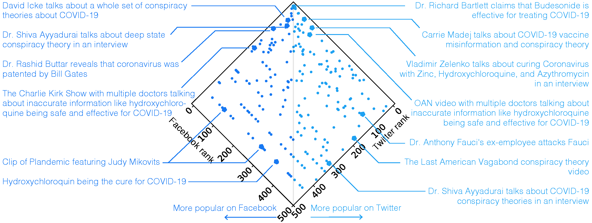

YouTube COVID-19 Vaccine Misinformation on Twitter: Platform Interactions and Moderation Blind Spots
While most social media companies have attempted to address the challenge of COVID-19 misinformation, the success of those policies is difficult to assess, especially when focusing on individual platforms. This study explores the relationship between Twitter and YouTube in spreading COVID-19 vaccine-related misinformation through a mixed-methods approach to analyzing a collection of tweets in 2021 sharing YouTube videos where those Twitter accounts had also linked to deleted YouTube videos. Principal components, cluster and network analyses are used to group the videos and tweets into interpretable groups by shared tweet dates, terms and sharing patterns; content analysis is employed to assess the orientation of tweets and videos to COVID-19 messages. From this we observe that a preponderance of anti-vaccine messaging remains among users who previously shared suspect information, in which a dissident political framing dominates, and which suggests moderation policy inefficacy where the platforms interact.
Read the paper

The COVID-19 Infodemic: Twitter versus Facebook
The global spread of the novel coronavirus is affected by the spread of related misinformation --- the so-called COVID-19 Infodemic --- that makes populations more vulnerable to the disease through resistance to mitigation efforts.
Here we analyze the prevalence and diffusion of links to low-credibility content about the pandemic across two major social media platforms, Twitter and Facebook. We characterize cross-platform similarities and differences in popular sources, diffusion patterns, influencers, coordination, and automation.
Comparing the two platforms, we find divergence among the prevalence of popular low-credibility sources and suspicious videos.
A minority of accounts and pages exert a strong influence on each platform. These misinformation ``superspreaders'' are often associated with the low-credibility sources and tend to be verified by the platforms.
On both platforms, there is evidence of coordinated sharing of Infodemic content.
The overt nature of this manipulation points to the need for societal-level solutions in addition to mitigation strategies within the platforms. However, we highlight limits imposed by inconsistent data-access policies on our capability to study harmful manipulations of information ecosystems.
Read the paper